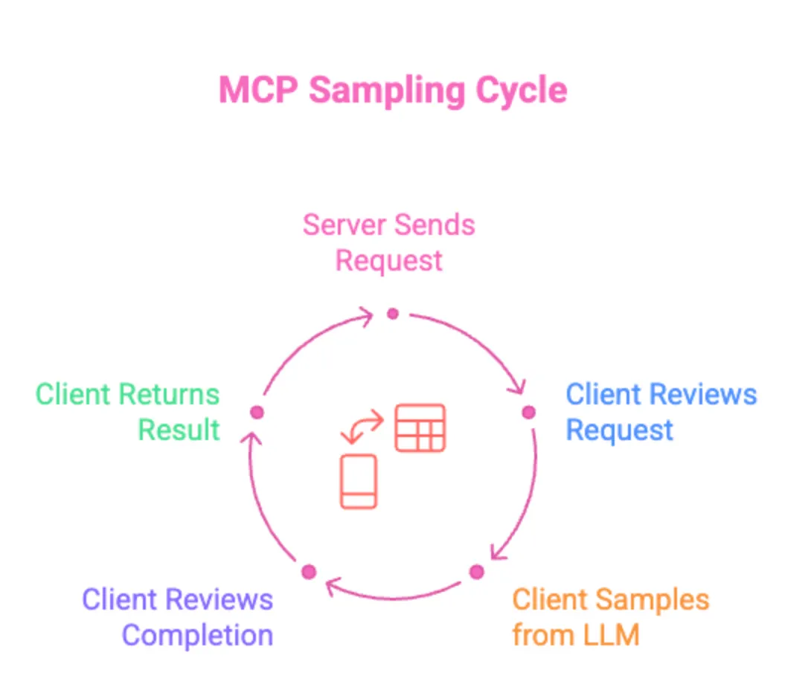

Advanced Feature: Sampling

-
What is Sampling? An MCP server can ask the client to perform an LLM inference on its behalf, keeping intelligence calls on the client side.
-
No Hosted Model Needed: Servers leverage the client’s chosen LLM, avoiding infrastructure and usage costs.
-
Control Stays with Client: Teams decide which model to use and how data is handled, preserving privacy and governance.